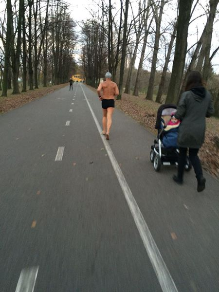
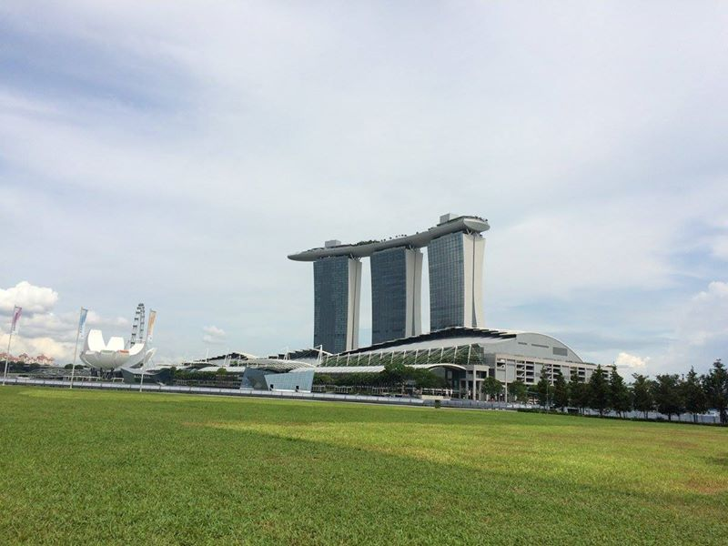
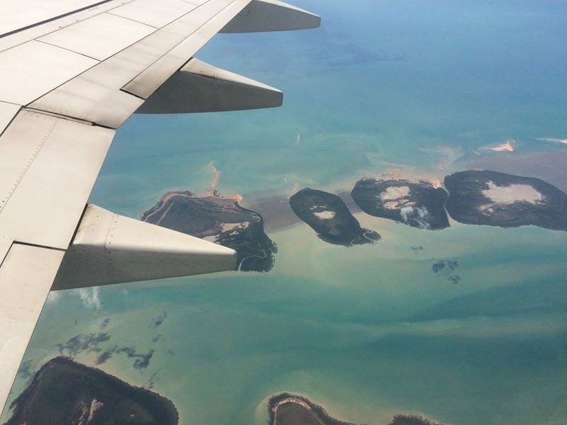
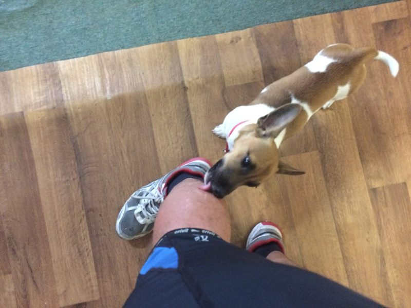
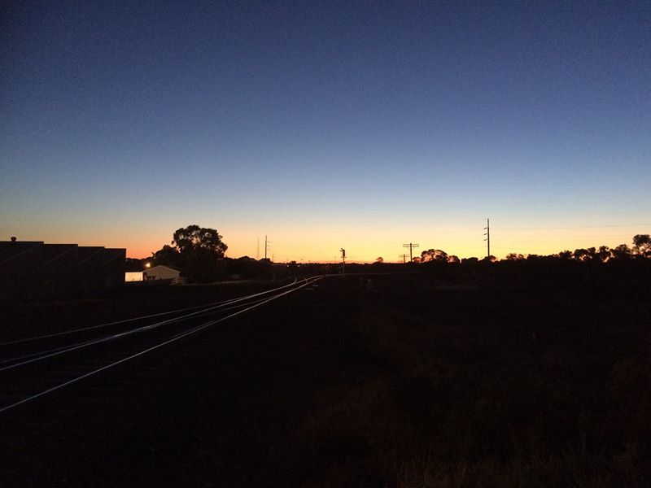

Cyklostopem po Austrálii zima 2015
Přes zimu jsem si udělal výlet do Austrálie s cílem ji přejet na kole ze západu na východ. Celou Austrálii jsem sice nepřejel, ale alespoň jsem vynalezl zbrusu nový způsob cestování tzv. cyklostopem.
To se takhle jednoho dne objevil nápad, že by bylo dobré přejet Austrálii na kole. Proč zrovna Austrálii? Proč na kole? A proč proboha v době australského léta? Dobré otázky, moc dobré. Sam autor ale netuší, mlčí a pravý důvod se asi nedozvíme, ač na to jako lajkovači této stránky máme plné právo. Pro účely tohoto fotopříběhu ale předpokládejme, že to byl třeba jeho sen.
O svůj nápad jsem se nadšeně podělil s ostatními. Někteří mí přátelé kontaktovali své příbuzné v Austrálii s dotazem, co si o mé jízdě myslí. Dostal jsem hned několik povzbuzujících emailů.
A tak jsem si koupil letenku bez možnosti vrátit peníze (abych si to náhodou nerozmyslel) a dva a půl týdne před odletem začal s intenzivní přípravou. Pražané mi pomáhali vytvořit atmosféru tropických veder, i když bylo venku jen pár stupňů.

Den před odletem zbývalo vše zabalit a tradááá, mířím k protinožcům. Hned samotná cesta na letiště byl zážitek. Cestoval jsem večerním autobusem vedle opilého muže, který okolní cestující obohacoval o zážitky z vykrádání osobních aut. Pokud máte BMW řady 7 nebo 8, buďte v klidu, vy ostatní se můžete o své pojízdné miláčky bát.
Dva dny přesunu na nejmenší kontinent začínají: Praha -> Frankfurt -> Singapure -> Darwin -> Perth. Během přeletu mezi Frankfurtem a Singapurem jsem seděl vedle staršího páru z Nového Zélandu. Ona seděla vedle okna, on seděl v uličce, já mezi nimi, takže jsem měl celou cestu zpestřenou o jejich konverzaci. Jedinečnou atmosféru doplňovaly dvě neustále brečící děti na sedačce přede mnou a za mnou.
Když se pak v polovině letu celá naše tříčlenná posádka levé sekce sedadel 59. řady A380 vydala na cestu k toaletám, došlo k prolomení konverzačního tabu mezi mnou a novozélandským párem. Jakmile jsem jim vylíčil, co chystám, paní se mě zeptala, zda nechystám v budoucnu i průjezd Afghánistánem, že to nebezpečí bude dost podobné jako tady. Zděšením navíc utichla veškerá batolata v letadle a my se konečně mohli vyspat.
Tak jako patří Vánoce k prosinci, tak patří i fotky jídel na Facebook. To jsem ještě netušil, že tahle snídaně v letadle je mé poslední dobré jídlo na následující dva týdny (viz dále).
A jsem v Singapuru. Tady jsem se chystal na vstup do světa showbusinessu, na svůj první (a poslední) Periscope přenos.
Changi Airport. Nejoblíbenější letiště na světě. Zaujalo mě tady hned několik věcí.
Třeba, že má každá toaleta svého přiděleného správce a lidé pak hned po dokončení potřeby hodnotí, jaký zážitek to pro ně byl. V mušlích na panských toaletách jsou navíc nalepené obrázky much, každá jinak, takže se do nich může člověk při konání potřeby trefovat. Je to velmi zábavné!
Nebo tahle vozítka, která vypadají a vydávají úplně stejné zvuky jako vozítka ze závěrečné scény ve filmu Marečku, podejte mi pero.
Protože jsem měl na přestup 18 hodin, rozhodl jsem se projít si Singapur. Pokud se chcete dostat do centra, můžete využít služby hromadné městské dopravy s půvabným názvem, který se tématicky hodí pro letní cestu na kole přes Austrálii: SMRT (Singapore Mass Rapid Transport).
Musím říct, že Singapure je asi nejhezčí moderní město, ve kterém jsem kdy byl. Mrakodrapy mezi tropickými parky? Wow.

Jen pozor, hned po příletu je člověk upozorněn, že za držení drog je trest smrti. Pokud tedy někdo cestuje do Singapuru s drogami, doporučuji je zkonzumovat rovnou během letu (navíc vám pak brečící batolata přijdou třeba legrační).
Singapur je mimochodem nejčistší město na světě. Za odhozenou žvýkačku jsou tady prý fyzické tresty.
V té lodi v 55. patře je asi nejslavnější bazén na světě (googli marina bay sands pool).

Dívka s tváří, která se mi velmi líbila. Muslimské ženy se nikdy nesmí fotit bez jejich souhlasu, takže proboha ne aby to někoho napadlo! NE-FO-TIT!
Hned po příletu do Darwinu jsem narazil na pravého Krokodýla Dundeeho.
Procházka Darwinem. Bystré návštěvníky by mohla napadnout otázka, proč jsem letěl přes Darwin, když jsem mohl letět do Perthu přímo ze Singapuru. Původní plán totiž počítal s přejezdem přes rudý střed Austrálie ze severu (Darwinu) na jih (Adelaide), pro což jsem měl i letenku. Protože jsem ale nenašel jediný cestopis někoho, kdo kdy přejel tuhle oblast na kole v létě, tak jsem se rozhodl, že zase takový průkopník být nemusím, a změnil jsem trasu ze západu (Perthu) na východ (Sydney), protože jsem našel cestopis jednoho Číňana, který se na tu trasu ve stejnou dobu alespoň vydal, i když nakonec nedojel (https://www.crazyguyonabike.com/doc/?doc_id=15222).
Přelet do Perthu a dále s Uberem na základnu.

Pravidla pana domácího, u kterého jsem v Perthu bydlel.
A je to tu! Hned po příchodu na pokoj jsem viděl to, před čím mě všichni varovali. Obrovští australští pavouci!
Palmy. Když jsem byl v dětském věku, tak pokud jsme jeli na dovolenou k moři, první foto, které bylo pořízeno, bylo s palmou. V Řecku, Itálii, Chorvatsku, jedno kam, hlavně, když tam bude palma. V Austrálii to taková pecka už není, palmy jsou všude a dnes jsem si už myslel, že jsem ze své palmové závislosti vyléčen, ale teď se dívám, že mám každou druhou fotku s palmou, takže to bude ještě na další léčení.

Při toulání po světě občas člověk narazí na nějaké zajímavé věci, drobnosti, které by bylo fajn mít i u nás doma. Tohle je jedna z nich. V supermarketech dávají prodavačky zboží přímo do tašek, které jsou na takovémhle otáčivém stojanu, takže se netvoří fronty, kdy člověk čeká, až si ten druhý naskládá zboží do tašky.
Další den jsem se vydal do centra Perthu hledat kolo. Nejprve jsem si ho chtěl koupit od někoho, protože se mi nechtělo platit za zcela nové. Takové hledání je jednoduché. Vyhlédnete si oběť. Někoho, kdo by mohl být vlastníkem kola. Čekáte až bude sám. Ujistíte se, že nemá kam utéct a pak zaútočíte otázkou: “Nemáš jízdní kolo?!”
Po sérii neúspěchů jsem se rozhodl, že si přeci jen zcela nové kolo koupím. Procházel jsem se Perthem a fotil si ho, když mě zastavil jeden postarší pán. Dělalo mu starost, že mé snímky Perthu nebudou dost dobré. Ukázal jsem mu tedy mapu a on mi zaznačil nejlepší místa pro focení. V Perthu jsou prostě lidi, kteří se trápí tím, že jejich město nevyfotíte tak dobře, jak byste mohli.
Po nějaké době jsem našel konečně prodejnu s koly. Nechtěl jsem moc zatížit peněženku, takže jsem se rozhodl pro levnější kousek. Když jsem pak řekl, co s kolem zamýšlím, pan prodávající se mě zeptal, zda mám Bibli, a pokud ne, ať si ji koupím. Byla to jeho jediná rada na cestu.
A vyrážím na testovací jízdu po cyklostezkách. Tady jsem udělal bohužel osudovou chybu. Nekoupil jsem si dle plánu závěsný vozíček za kolo, do které by šlo naskládat veškeré vybavení. V Austrálii jsou mimo města cesty tvořené drobným kamením zalitým v betonu, takže kolo neustále drnčí a zadní kolo tak dostává permanentní nárazy a přetížené kolo to nemůže vydržet.
Kam zamířit ve 35 stupních na testovací jízdu je asi jasné. Testovací jízda nedopadla dobře, musím opravovat střed šlapátek a přední kolo začíná někdy vydávat nepříjemné zvuky a já nemůžu přijít na to, čím to je. Začínám pomalu přemýšlet o té Bibli.
Povšimni si prosím, že jezdím s českou vlaječkou. Tu mám proto, protože je fajn, když mě někdo kvůli ni zastaví a pak můžeme pokecat, pozve mě na jídlo a tak, je to super!
Škoda jen, že mě zatím nikdy nikdo kvůli ní nezastavil.
Hned v Perthu bylo důležité splnit jeden z dílčích cílů mise Austrálie: najít klokany. Podle legendy se klokani vyvinuli z králíků, které sem kdysi přivezl Jára Cimrman, a mimořádně se jim zde začalo dařit.
Poslední foto před opuštěním základny. Dosud byl největší problém správně vyslovit slovo “perth”, protože ať jsem ho vyslovil jakkoliv, všichni rozuměli “paris” a gratulovali mi k dojezdu z Paříže až sem. No, těžko se jim to rozmlouvalo. Kdybyste náhodou slyšeli něco o tom, jak někdo z Paříže dojel až do Perthu na kole, berte to trochu s rezervou.
Poštovní schránky kousek za Perthem.

Pár desítek kilometrů za Perthem začíná zadní kolo nepříjemně prokluzovat. Já tuším, co to je, ale za žádnou cenu se nechci podívat dozadu a snažím se dlouho dělat, že to není. K mému zděšení je to mnohem horší, než jsem si myslel. Ne jeden defekt, ale mnoho. A v plášti jsou zabodnuty stovky trnů. Nepomůže ani výměna duše, musím vyměnit pláště. Jenže zpátky je to tak 30 km a nejbližší opravna po cestě je 80 km vzdálený Northam. Co teď?
Když v dávných dobách antičtí dramatikové nevěděli, jak vyřešit složitou situaci v jejich hře, použili k tomu zásah bohů, deux ex machina. U mě to bylo stejné. Kde se vzal, tu se vzal, najednou se objevil Ken z Hong Kongu a nabídl mi pomoc. Naložili jsme kolo do jeho fára a projížděli okolí a hledali cykloprodejnu. Jednu jsme za chvíli našli a měla dokonce otevřeno i v neděli. Kolo jsme opravili a když došlo na placení, Ken chtěl celou opravu a výměnu (cca 4 tis.) zaplatit za mě. Musel jsem se fakt bránit. Pak mě odvezl na místo, kde mě vysadil, dal mi své adresy v Brisbane a Hongkongu, že kdybych někdy v daných místech byl a potřeboval přespat, nechť se na něj obrátím.
Z našich restaurací jsem už zvyklý, že když si objednám maso k jídlu, dostanu i informace o tom, kde to prasátko vyrůstalo, co celý život jedlo, jaké mělo kamarády, čím chtělo být, až by bylo velké nebo jakou svini za život potkalo. Ne tak v Austrálii. Jídla v roadhousech a malých vesnicích jsou hrozná. Jsou zde jen hamburgery a hranolky, vše maximálně připálené. Tohle jídlo jsem po téměř celodenním půstu raději vyhodil a rozhodl se strávit noc o hladu.
Odpoledne jsem už neměl dost sil na to, abych dojel do Northamu (cca 110 km od Perthu),
tak jsem se rozhodl pro nouzové přespání u cesty. Už za tmy rozbaluji moskytiéru a jdu hned spát, jenže nemůžu usnout. Ani ne 10 metrů ode mě jezdí roadtrainy, silniční vlaky, které vydávají ohromný hluk, u kterého se nedá usnout. Takže první den: bez spánku, bez jídla, s porouchaným kolem. Tak takhle jsme si to nepředstavovali.
Můj první den na cestě Austrálií tedy dopadl dost podobně jako můj první den mé první jízdy k moři. Tehdy mě o půlnoci napadlo divoké prase a taky jsem celou noc nespal. Navíc jsem po probuzení zjistil, že jsem spal u brány do vězení.
Druhý den a výjezd do tropických veder. Nejvyšší teplotu, kterou jsem v Austrálii zažil, byla 42,5 stupně. Díky bohu jsou ale tyhle extrémní teploty hlášeny pro stín, který v Austrálii není, takže se mě tyhle hodnoty vůbec netýkaly, jinak by to bylo hrozné.
Po 30 km konečně v Northamu a rozhoduji se 2. den již ukončit. Jakmile majitel viděl zbídačeného českého imigranta, dostal jsem výraznou slevu na ubytování v téhle buňce a mohl jsem tak strávit jednu noc s klimatizací.
Jedno z mnoha odpočívadel na cestě. Tady jsem občas potkal šedé nomády, lidi, kteří s přívěsem putují napříč Austrálií. Občas se stávalo, že mě přišli pozdravit. Jak se ke mně přibližovali, jejich tvář postupně bledla a téměř beze slova mi podávali něco chladného k pití.
Až se jednou zase budou dělat žebříčky nejlepších míst pro život, tak než zase vyhraje Austrálie, doporučuji do hodnocení zavést další atribut: počet odehnaných much za vteřinu a Austrálie se rapidně v žebříčku propadne.
Voda! Nebo fata morgána?
Australian outback.

Jedna z několika vesniček na cestě. Výjezd z nich byl vždy složitý, protože v Austrálii se jezdí vlevo a zvyknout si na to mi chvíli trvalo. Nemění se jen jízdní pruh, ale vše k tomu, včetně třeba brzd na australských jízdních kolech. To znamená, že když je člověk zvyklý rychle zabrzdit stiskem pravé ruky, tak v Austrálii, podobně jako málem já, přepadne přes řídítka.
Po 110 km se dostávám do Kellerberinu. Ráno se snažím vyrazit už v 5, abych se vyhnul tropickým teplotám, nicméně kolo mě nepouští a já zde musím strávit o den více.
Vánoce v Austrálii. Kéž by přišel Ježíšek i ke mně a donesl mi nové kolo. S ohledem na to, že je to batole, tak to moc reálně nevidím.
Asi 50 km po výjezdu z Kellerberinnu se ozve prasknutí a kolo přestane jet. Podívám se pod sebe a nevěřím svým očím. KDE MÁM ŘETĚZ??? Řetěz niet. Ty vole, on může prasknout i řetěz? Nevěřícně se dívám na tu zkázu, když vedle mě zastavuje tenhle řidič Marc s dotazem, zda mi může pomoci. Naložíme kolo do náklaďáku a jedeme hledat nejbližší prodejnu kol.
Jako moderní člověk jsem se rozhodl to hledání trochu urychlit, takže jsem vytáhl svůj moderní telefon s GPS a jal se hledat nejbližší obchod s koly moderním způsobem. Aplikace maps.me mi jako první nabídla 10 tis. km vzdálený obchod v Etiopii. Marcu, tohle bude dlouhá cesta.
Deux ex machina podruhé. Po 30 km jsme v malé vesničce našli obchod s koly, kde jsem si mohl řetěz dokoupit. Popadá mě neskutečná radost. Když tady prodávají kola, určitě tady budou mít i někoho, kdo je opravuje! Ptám se na mechanika, ale čeká mě nepříjemná odpověď. Přes svátky se kola jen prodávají, neopravují a nejbližší mechanici budou až v Adelaide. To je, jako kdyby vám řekli v Londýně, že s opravou musíte vydržet do Moskvy. A kdo by chtěl proboha opravovat kolo v Rusku, že jo.
No nic, pokračuji. Kousek po výjezdu z města se mi zjevuje dost hrozný pohled. Zastavuje tu řidič kamionu se zvířaty, která jsou tam narvaná k prasknutí. Protože už některým trčely nohy a hlava ven, zastavuje a snaží se je silou zase vecpat zpět do auta.
Road trainy, tedy silniční vlaky. Jsou dlouhé až 50 metrů a pro cyklisty představují nemalé nebezpečí. Jakmile totiž projedou kolem rychlostí 100 km/h, větrný poryv s nimi přiházející je tak silný, že dokáže člověka vtáhnout pod jejich kola. Jejich řidiči proto na mě troubili dlouho předtím, než kolem mě projeli. To pro mě znamenalo rychle se uklidit z cesty.
Když majitel tohoto zjistil, že si ho fotím, vystoupil a donesl mi vychlazenou vodu.
Jak řešit situaci, kdy není k dispozici sprcha? Jedno řešení existuje. Tenhle pes byl zprvu trochu nejistý. „Mám ho oblíznout, nemám ho oblíznout, přeci jen, je to jiná kultura, neuškodí mi to?“ ale pak podobně jako ostatní neodolal.

Nejdelší plot na světě. V různých cedulkách se Australané vyžívají.
Po poledni přijíždím do Carrabinu a mám radost. Splnil jsem plánovaný počet km (110) a cítím se dobře. Našel jsem kemp a jdu se ubytovat. Přivítá mě naprosto zhulený kluk v tričku „sons of anarchy“ a následuje anglická konverzace, kdy on dlouhé minuty opakuje jediné slovo „powered?“ (s elektřinou?) a já dokola opakuji, že elektřinu nepotřebuji. Po chvíli se rozhodnu ustoupit a řeknu, že chci tedy místo s elektřinou, na což reaguje tím, že bohužel žádné místo pro stan s elektřinou nemají... Pak na sebe dlouhé minuty mlčky díváme a přemýšlíme, jak tu zapeklitou situaci vyřešit. Následně přijde jeho matka/sestra/dcera/přítelkyně/babička/vnučka a konečně mi ukáže místo, kde si můžu postavit stan.
Večer jsem si šel dát něco na jídlo a když mi servírka donesla menu, myslel jsem, že se štěstím rozbrečím. Stálo to tam v celé své kráse: spaghetti bolognese. To bylo jídlo, které jsem jedl nejčastěji na své tour do Athén! Když jsem to uviděl, úplně se mi roztřepaly ruce a samou radostí jsem běžel za servírkou objednat si je, aby mi je náhodou někdo nesnědl, než přijde pro objednávku. „Zvládnu tři porce? A nebo dokonce čtyři? Dám si pět!“ přemýšlím si cestou. „Nemáme, máme jen tyhle hamburgery” zničila mi život servírka. Podle mě je svět disertační práce nějakého studenta, který se tímhle vším děsně baví.

Nový den. Welcome to Yilgarn. Good country for hardy people. Začínám tušit.
Něco stane a přední kolo úplně přestává jet. Jakmile se rozjedu, přepadám hned na stranu. Navíc drhne zadní kolo. Snažím se s tím chvíli bojovat, ale po čase uznám, že bez servisu to nepůjde. Vracím se tedy zpět do vesnice Southern Cross, kde mám větší šanci získat pomoc.
Zde se snažím trochu nesměle obcházet okolní obyvatele a ptám se, zda by mi někdo nějak nepomohl. Mám trochu pocit, že mi moc nevěří, každý si chce jízdu na blbém kole vyzkoušet. „A to víš, že máš zlomené i zadní kolo?” ptá se mě pobaveně jeden starší Australan. To drhnutí je tam proto, protože je celé kolo zkroucené do osmičky a některé paprsky výpletu jsou úplně zkřivené.
Zjistil jsem, že nejbližší cyklistická prodejna po cestě je v Kalgoorlie, 220 km odtud. Začínám tedy obcházet okolní řidiče, zda by mě tam někdo nevzal. Buď tam nikdo nejel, nebo měl na zadním sedadle podobného vlčáka, který byl zásadně proti.
Po hodině hledání jsem byl už zoufalý. Sedl jsem si na zem a přemýšlel jsem, co budu dělat, když mi na rameno zaťukala jedna paní, kterou jsem před chvílí oslovil, a podává mi tenhle lísteček, ať ho ukazuji ostatním a raději už nic neříkám. Pak mě ještě odvedla k silnici a učila mě, jak stopovat a jak správně vztyčit jeden z prstů na projíždějící řidiče, kteří mě stále nechtějí vzít (palec samozřejmě!).
Konečně mám štěstí a najdu někoho, kdo jede tím směrem a má dostatek místa, aby mě vzal. Naložíme všechny věci do auta a já si jdu ještě odskočit. Když se vrátím, auto nikdo. Rozhlížím se vpravo, vlevo, nikde nikdo. Řidič ujel. Co teď? Problém se zničeným kolem se zdá být vyřešen, ale mám úplně nový problém. Začínám trochu litovat, že jsem si tu Bibli nekoupil.
Představuji si, jak teď budu všechno vysvětlovat orgánům činným v trestním řízení, když na mě někdo mává a já zjišťuji, že si Mario, řidič auta s mým kolem, dojel jen dotankovat benzín. Můžeme vyrazit na cestu.
Když jsme dojeli do cíle, už se začalo stmívat a Mario mi nabídl, že u něj můžu přespat. Přijel do Kalgoorlie z Perthu, aby zde uklidil dům před jeho prodejem. Já mu za to nabídl pomocnou ruku. Tady bych chtěl zdůraznit, že ta Austrálie nebyla žádná dovolená, jak by si mohli mnozí myslet. Nejenže jsem po celou dobu vyráběl pomocí solárních panelů elektřinu, ale také jsem poprvé v životě plel záhonky.
Ráno mířím do obchodu a tam mě čeká další krutá rána osudu. Potřeboval bych ještě nějaké další opravy a vše by mě stálo stejně jako nové kolo, což se mi moc platit nechce. Horší je, že tady nemají přídavný vozíček za kolo. Kolo bych sice opravil, ale brzy by se nejspíš stalo to samé a kolo by zase prasklo. Navíc přes poušť bych musel brát o 10 kg více nákladu. Mohl bych si ho objednat v Perthu a nechat si ho sem dovézt, ale je před svátky a pak je hned víkend. Nejbližší datum dodání je 28.12. Protože bych chtěl ale celou trasu projet jen na kole, musel bych se navíc ještě vracet 220 km zpět a tady bych se dostal na přelomu roku. Jenže to už je místo 5 plánovaných dnů na tuhle část trasy o dva týdny navíc.
Pod dozorem kamer přemýšlím, co dále. Rozhodl jsem se cestu přerušit, vrátit zpět do ČR a zase za půl roku se sem vrátit a pokračovat s vlastním kolem. O důvodech později.
Večer trávím spolu s asociálními bytostmi Kalgoorlie v McDonaldu, kde je free wifi a hledám, jak se odtud dostat dostat do Perthu. Cestu zpět mi nabízí opět Mario, já souhlasím a můj servisní tým v Česku (rodiče) mi pomáhají zařídit změnu letenky a odlet z Perthu.
Den se pomalu chýlí ke svému konci a já začínám být trochu nervózní, protože musím být druhý den v Perthu, cesta má trvat zhruba 7 hodin a už se stmívá. Nicméně kolem 21. hodiny, již téměř za tmy, na cestu vyrážíme a já hned od začátku pozoruji, že můj řidič není v plné kondici. Kromě toho, že pracoval od brzkého rána, se mi také přiznává, že celou minulou noc nespal a je velmi unaven. S Kalgoorlie nicméně vyjíždíme a co chvíli míjíme cedulky „Don’t drive TIRED!“, „Drive safely“ a další.
Co chvíli zastavujeme na podobných benzinkách a odpočívadlech. Mario se snaží promnout oči a říká mi, že v dané situaci je nejlépe se na 10 minut vyspat, což také co chvíli dělá. Já jen tiše sedím a snažím se nenarušit kvalitu mikrospánku. V duchu se také loučím s představou, že stihnu letadlo s Perthu. To by ale nebylo nic nového, na všech mých výletech jsem nikdy nestihl letadlo zpět, protože jsem tam přijel později, takže pro mě standardní situace.
Po několikáté zastávce přichází rozhovor, který už nějakou dobu očekávám. Jsme na parkovišti vedle podobného billboardu.
„Umíš řídit?“
„Umím, ale nemám tady řidičák.“
„To nevadí, troufáš si na to?“
„To asi ano, ale nemám ani mezinárodní řidičák.“
„Tak fajn, pojedeš teď ty.“
„Ale co když mě chytí policie?“
„Nechytí.“
„Ale co když jo?“
„Nechytí.“
„Ale co když mě zas …“
„Nechytí.“
A tak jsem za tuhé noci sedl na místo řidiče a vydal se do Perthu. Poprvé jsem si vyzkoušel jízdu vlevo, jak se v Australii standardně jezdí, jel jsem s úplně jiným typem auta, než která znám, poprvé jsem jel s automatem atd.
Po mnoha hodinách jsme dojeli až do Perthu. Zhruba 200 km před cílem se Mario vzbudil, vytáhl desku Beatles a zbytek cesty do Perthu si s nimi zpíval. Před Perthem převzal opět kontrolu nad řízením a zhruba 5 km před letištěm jsme měli opět 15 minutovou přestávku na rychlý spánek, nicméně do Perthu jsme se dostali k mému velkému překvapení živí.
V Perthu jsem ještě zažil poplach kvůli podezřelému zavazadlu. Jakmile byli všichni teroristé postřílení, mohl jsem vyrazit přes Singapur a Mnichov zpět.
České přivítání.
Ten zdaleka nejdůležitější důvod, proč tohle dělám, je ten dojezd. Celá ta cesta zabírá moře času plánování a úsilí a ten dojezd na konci se nedá popsat. Poslední dva, tři dny před dojezdem člověka popadá euforie, která se neustále stupňuje až po ten poslední okamžik, kdy se člověk dostane do toho konkrétního místa, které si stanovil. A pak dlouho přetrvává. Všechny ty věci okolo, množství zážitků, to je skvělé a je to to, co pak budu vyprávět, ale ten dojezd to nenahradí.
Tady mě mrzelo už to, že jsem musel 200 km jet autem a musel bych se vracet. Někdo by se nad tím mohl podivovat. Proč? Vždyť je to jedno, do cíle dojedeš tak či tak, ne? Ale to není to stejné. Je to jako kdyby horolezce šplhajícího na nějakou osmitisícovku mezi 7000 a 8000 někdo vynesl a on pak ten zbytek došel na vrchol. Na vrcholu sice byl, ale ...hm. V Kalgoorlie končí civilizace a dalších 2000 km žádné město s cyklistickým vybavením není. Tady hrozilo to, že se mi to samé stane uprostřed pouště nebo že vlivem dalších a dalších zpoždění nestihnu do Sydney dojet a budu se muset vrátit před dojezdem.
Před rokem a půl jsem dojel bez problémů do Athén na nejlevnějším kole široko daleko. Přetížené přežilo i totálně rozbité silnice v Albánii, za 3500 km jsem měl jediný defekt. Tady v Austrálii jsem měl problémy úplně se vším každou chvíli na papírově kvalitnějším kole. Že nějaké problémy budou, s tím člověk počítá, ale doufal jsem, že právě do Kalgoorlie budou všechny vyřešeny.
No, stane se. Čím je to složitější, tím je to lepší, o to zajímavější pak bude dojezd příště.
Milá Austrálie, první bitvu jsi vyhrála. Počítá se ale až vyhraná válka. A tady to budeš mít ještě těžké. V květnu se utkáme znova.
A vrátím se s mnohem lepší výzbrojí.